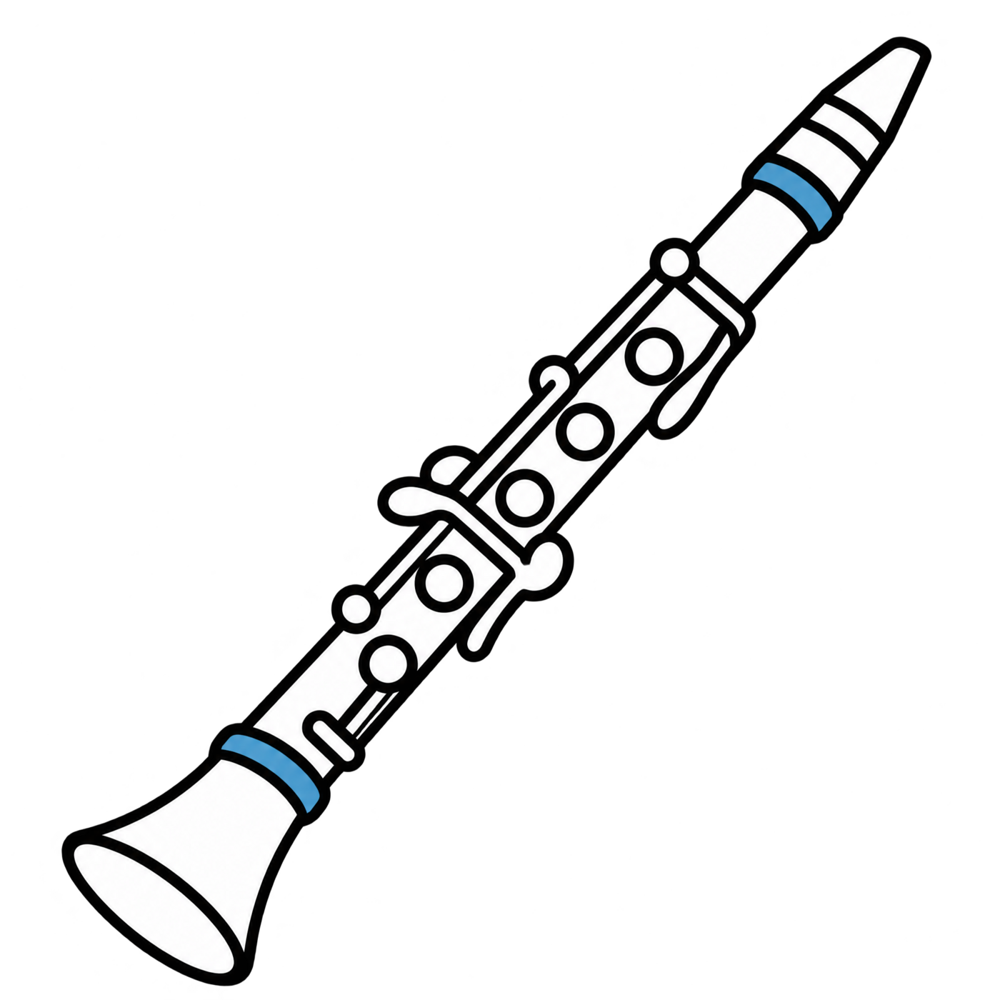

| Grades | Worksheets | Focus |
|---|---|---|
| 6–7 | 1, 3, 4, 6 | Reading and writing key signatures; scales |
| 8–9 | 2, 5, 7, 8 | All 15 key signatures; concert to written pitch |
| 10–12 | 9, 10, 11 and the quiz | Mixed instruments; written to concert; score reading |
The activities support the Performing and Responding processes of the National Core Arts Standards for Music (for example, analyzing the structure of music selected for performance). Match them to your own curriculum.
No songs, lyrics or copyrighted characters are used. Created with the help of digital and AI tools. Notation and answer keys are verified before release.
A ten-session plan for a band or orchestra class that meets daily or a few times a week. Each session is 10 to 15 minutes, so it fits at the start of rehearsal. Stretch it to two weeks of bell ringers, or run two sessions a day for a unit.
| Session | What happens | Teach from | Student page |
|---|---|---|---|
| 1 | Vocabulary and the key signature chart. Students read the chart and find where each sharp and flat goes. | page 4 | page 13 |
| 2 | The circle of fifths and the order of sharps and flats. Practice the memory tricks. | page 7 | page 14 |
| 3 | Writing key signatures in treble and bass clef. | page 6 | page 15 |
| 4 | Major scales with the key signature given. Check each half step. | page 7 | page 16 |
| 5 | Major scales with accidentals written on the notes. | page 6 | page 17 |
| 6 | Transposing instruments: why a clarinet part looks different from a flute part. Concert to written for B-flat instruments. | page 8 | page 18 |
| 7 | Concert to written for E-flat instruments. | page 11 | page 19 |
| 8 | Concert to written for horn in F, then mixed instruments. | page 12 | pages 20–21 |
| 9 | Written to concert, then one concert key for every section. | page 8 | pages 22–23 |
| 10 | Quiz and score sheet. | page 5 | page 24 |
Worksheets 1, 3, 6, 7 and 8 take about 10 minutes. Worksheets 2, 4, 5, 9, 10 and 11 take about 15 minutes, and the quiz takes about 20 minutes in all.
Use these 16 words with the charts and worksheets. Students can copy them into a notebook, add a drawing or an example, or use them as a word wall for a unit on band music theory.
| Concert pitch | The pitch that actually sounds. Every player in the band hears the same concert pitch. |
| Written pitch | The note printed in a player's own part. For a transposing instrument it is not the sounding pitch. |
| Transposing instrument | An instrument whose written music sounds higher or lower than the printed notes, such as clarinet, alto sax or horn in F. |
| Key signature | The sharps or flats at the start of each staff that tell you which notes are always raised or lowered. |
| Major scale | Eight notes in a row built from the pattern whole, whole, half, whole, whole, whole, half. |
| Whole step / half step | A whole step is two half steps. A half step is the smallest distance on the keyboard. |
| Tonic | The first note of a scale. It gives the key its name. |
| Accidental | A sharp, flat or natural sign written beside a note. It changes that note, not the whole key. |
| Sharp / flat / natural | A sharp raises a note a half step, a flat lowers it a half step, and a natural cancels both. |
| Circle of fifths | A diagram that puts the 12 major keys in order, each a perfect 5th above the last. It shows how many sharps or flats each key has. |
| Enharmonic | Two names for the same pitch, such as G-sharp and A-flat. Enharmonic keys sound the same but are spelled differently. |
| Interval | The distance between two pitches, such as a major 2nd, a major 6th or a perfect 5th. |
| Clef | The sign at the start of a staff that fixes the note names. Treble clef is for high instruments and bass clef is for low ones. |
| Staff | Five lines and four spaces on which music is written. Notes are named by their line or space. |
| Ledger line | A short extra line used for notes above or below the staff. |
| Octave | Eight scale steps apart. Two notes an octave apart have the same letter name. |
Items on Worksheets 1, 2, 3, 6 to 10 and 11 are worth 1 point each. A transposition item earns its point only when the key name and the number of sharps or flats are both right. A scale on Worksheets 4 and 5 is worth 2 points: 1 for the right notes and 1 for the right sharps or flats. The quiz is worth 20 points. A suggested scale for the quiz: 18–20 exceeds, 15–17 meets, 11–14 approaching, 10 or fewer beginning.
| Skill | 4 Exceeds | 3 Meets | 2 Approaching | 1 Beginning |
|---|---|---|---|---|
| Key signatures | Names and writes every key signature, in both clefs, with the sharps and flats in the correct order and places. | Names and writes most signatures correctly; one or two errors in order or position. | Needs the chart for most signatures; mixes up sharps and flats. | Cannot yet read or write a key signature. |
| Scales | Writes every scale with correct notes, accidentals, stems and ledger lines. | Notes are correct; a few accidentals missing or misplaced. | Right starting note, but half steps are in the wrong places. | Cannot yet build a scale. |
| Transposition | Names the written or concert key for any instrument and uses the enharmonic key when needed. | Correct for the common keys; one or two slips with extreme keys. | Needs the chart; uses the wrong interval for some instruments. | Cannot yet transpose a key. |
| Page | Possible | Score |
|---|---|---|
| Worksheet 1: Name the key (up to 4 sharps or flats) | 12 | |
| Worksheet 2: Name the key (all 15 key signatures) | 15 | |
| Worksheet 3: Write the key signature | 12 | |
| Worksheet 4: Write the scale (key signature given) | 12 | |
| Worksheet 5: Write the scale (add the accidentals) | 12 | |
| Worksheet 6: Concert to written, B-flat instruments | 12 | |
| Worksheet 7: Concert to written, E-flat instruments | 12 | |
| Worksheet 8: Concert to written, horn in F | 12 | |
| Worksheet 9: Concert to written, mixed instruments | 12 | |
| Worksheet 10: Written to concert, mixed instruments | 12 | |
| Worksheet 11: One concert key, every section | 18 | |
| Quiz: key signatures, scales and transposition | 20 | |
| Total | 161 |
All 15 major key signatures, from no sharps or flats through 7 sharps and then 7 flats. Three of the keys have a twin that sounds the same: B major and C-flat major, F-sharp major and G-flat major, C-sharp major and D-flat major. That makes 12 different major keys on the keyboard.
Each step clockwise adds one sharp, and each step counterclockwise adds one flat. The number under each key is its sharps or flats.
F C G D A E B
Father Charles Goes Down And Ends Battle
Trick: the last sharp is a half step below the key name. Last sharp D-sharp? Then the key is E major.
B E A D G C F
Battle Ends And Down Goes Charles's Father
Trick: the next-to-last flat names the key. Flats B, E, A, D? The next-to-last is A, so the key is A-flat major. One flat is always F major.
A transposing instrument sounds a different pitch from the one written. A band director wants the whole band to sound in the same concert key, so each section reads its own written key. Written key = concert key + the instrument's interval.
| Group | Instruments | The sound | Written key | Signature shortcut |
|---|---|---|---|---|
| C instruments | Flute, oboe, bassoon, trombone, euphonium (bass clef), tuba, mallet percussion | As written (unison) | The same key | No change |
| B-flat instruments | Clarinet, bass clarinet, trumpet, tenor sax, euphonium and baritone horn (treble clef) | A major 2nd lower than written | Up a major 2nd | Add 2 sharps (or take away 2 flats) |
| E-flat instruments | Alto sax, baritone sax, alto clarinet | A major 6th lower than written | Up a major 6th | Add 3 sharps (or take away 3 flats) |
| F instruments | Horn in F | A perfect 5th lower than written | Up a perfect 5th | Add 1 sharp (or take away 1 flat) |
The band plays in concert E-flat major (3 flats). This is what each section reads.
Concert A-flat major, alto sax: A-flat up a major 6th is F major. Shortcut: 4 flats, add 3 sharps, leaves 1 flat. If a written key would need 8 or more sharps or flats, use the enharmonic key instead. Concert F-sharp major for a B-flat clarinet would be G-sharp major, so write A-flat major with 4 flats. Charts mark these keys with an asterisk (*).
flute (C): in unison
oboe (C): in unison
bassoon (C): in unison
trombone (C): in unison
tuba (C): in unison
euphonium (bass clef) (C): in unison
clarinet (B-flat): a major 2nd lower
trumpet (B-flat): a major 2nd lower
tenor sax (B-flat): a major 9th lower
bass clarinet (B-flat): a major 9th lower
alto sax (E-flat): a major 6th lower
alto clarinet (E-flat): a major 6th lower
baritone sax (E-flat): an octave and a major 6th lower
horn in F (F): a perfect 5th lower
C instruments read the same key as the concert key. Flute, oboe and mallet percussion read treble clef. Trombone, bassoon, euphonium and tuba usually read bass clef, so the sharps and flats sit on different lines and spaces.
| Concert key | Treble clef | Bass clef |
|---|---|---|
| C major no sharps or flats | ||
| G major 1 sharp | ||
| D major 2 sharps | ||
| A major 3 sharps | ||
| E major 4 sharps | ||
| B major 5 sharps | ||
| F major 6 sharps | ||
| D major 5 flats | ||
| A major 4 flats | ||
| E major 3 flats | ||
| B major 2 flats | ||
| F major 1 flat |
Treble and bass clef signatures show the same key. Notice that the pattern of sharps and flats shifts in bass clef.
Clarinet, bass clarinet, trumpet, tenor sax and treble-clef euphonium or baritone horn. These instruments sound a major 2nd lower than written, so the written key is up a major 2nd from the concert key. Shortcut: add 2 sharps (or take away 2 flats).
| Concert key | Concert signature | Written key | Written signature | |
|---|---|---|---|---|
| C major no sharps or flats | → | D major 2 sharps | ||
| G major 1 sharp | → | A major 3 sharps | ||
| D major 2 sharps | → | E major 4 sharps | ||
| A major 3 sharps | → | B major 5 sharps | ||
| E major 4 sharps | → | F major 6 sharps | ||
| B major 5 sharps | → | C major 7 sharps | ||
| F major 6 sharps | → | A major* 4 flats | ||
| D major 5 flats | → | E major 3 flats | ||
| A major 4 flats | → | B major 2 flats | ||
| E major 3 flats | → | F major 1 flat | ||
| B major 2 flats | → | C major no sharps or flats | ||
| F major 1 flat | → | G major 1 sharp |
* This key would need more than 7 sharps or flats, so the enharmonic key is written instead. The two keys sound the same.
Alto sax, baritone sax and alto clarinet. These instruments sound a major 6th lower than written, so the written key is up a major 6th from the concert key. Shortcut: add 3 sharps (or take away 3 flats).
| Concert key | Concert signature | Written key | Written signature | |
|---|---|---|---|---|
| C major no sharps or flats | → | A major 3 sharps | ||
| G major 1 sharp | → | E major 4 sharps | ||
| D major 2 sharps | → | B major 5 sharps | ||
| A major 3 sharps | → | F major 6 sharps | ||
| E major 4 sharps | → | C major 7 sharps | ||
| B major 5 sharps | → | A major* 4 flats | ||
| F major 6 sharps | → | E major* 3 flats | ||
| D major 5 flats | → | B major 2 flats | ||
| A major 4 flats | → | F major 1 flat | ||
| E major 3 flats | → | C major no sharps or flats | ||
| B major 2 flats | → | G major 1 sharp | ||
| F major 1 flat | → | D major 2 sharps |
* This key would need more than 7 sharps or flats, so the enharmonic key is written instead. The two keys sound the same.
Horn in F. These instruments sound a perfect 5th lower than written, so the written key is up a perfect 5th from the concert key. Shortcut: add 1 sharp (or take away 1 flat).
| Concert key | Concert signature | Written key | Written signature | |
|---|---|---|---|---|
| C major no sharps or flats | → | G major 1 sharp | ||
| G major 1 sharp | → | D major 2 sharps | ||
| D major 2 sharps | → | A major 3 sharps | ||
| A major 3 sharps | → | E major 4 sharps | ||
| E major 4 sharps | → | B major 5 sharps | ||
| B major 5 sharps | → | F major 6 sharps | ||
| F major 6 sharps | → | C major 7 sharps | ||
| D major 5 flats | → | A major 4 flats | ||
| A major 4 flats | → | E major 3 flats | ||
| E major 3 flats | → | B major 2 flats | ||
| B major 2 flats | → | F major 1 flat | ||
| F major 1 flat | → | C major no sharps or flats |
Every written key on this page has 7 or fewer sharps or flats, so no enharmonic substitutions are needed.
Directions: Each staff shows a major key signature. Write the name of the key and how many sharps or flats it has. Use the key signature chart (page 6) if you need help.
Directions: Name each major key. Some staves use treble clef and some use bass clef. Also write how many sharps or flats each key has.
Three pairs of major keys on this page sound the same. Write one pair here:
Directions: Write the key signature for each major key. Draw the sharps or flats in the correct order and on the correct lines and spaces. Check the order on page 7.
D major (treble clef)
E major (bass clef)
E major (treble clef)
D major (bass clef)
F major (treble clef)
B major (bass clef)
B major (treble clef)
A major (bass clef)
C major (treble clef)
G major (bass clef)
A major (treble clef)
F major (bass clef)
Directions: The key signature is printed for you. Write each major scale, starting on its tonic and going up one octave. Use quarter notes, and put stems on the correct side of each note. Say the half steps out loud: they fall between steps 3 and 4 and steps 7 and 8.
Write the G major scale, one octave up, in quarter notes.
Write the F major scale, one octave up, in quarter notes.
Write the D major scale, one octave up, in quarter notes.
Write the B major scale, one octave up, in quarter notes.
Write the A major scale, one octave up, in quarter notes.
Write the E major scale, one octave up, in quarter notes.
Directions: There is no key signature on these staves. Write each major scale one octave up in quarter notes, and put a sharp or flat sign in front of every note that needs one. The scale is the same one you would write with a key signature.
Write the C major scale, one octave up, in quarter notes.
Write the E major scale, one octave up, in quarter notes.
Write the A major scale, one octave up, in quarter notes.
Write the B major scale, one octave up, in quarter notes.
Write the D major scale, one octave up, in quarter notes.
Write the F major scale, one octave up, in quarter notes.
Directions: The band is playing in the concert key shown. Name the written key for a player on clarinet, trumpet or tenor sax, and write how many sharps or flats that key has. Use the chart on page 10 to check your work after you finish. If a written key would need more than 7 sharps or flats, write its enharmonic key and put an asterisk (*) after it.
B-flat instruments sound a major 2nd lower than written. The written key is up a major 2nd.
| # | Concert key | Written key | Sharps or flats |
|---|---|---|---|
| 1 | C major | ||
| 2 | A major | ||
| 3 | E major | ||
| 4 | G major | ||
| 5 | D major | ||
| 6 | E major | ||
| 7 | D major | ||
| 8 | F major | ||
| 9 | B major | ||
| 10 | B major | ||
| 11 | A major | ||
| 12 | F major |
Which concert key gave you the written key with the most sharps or flats? Why does that happen?
Directions: The band is playing in the concert key shown. Name the written key for a player on alto sax or baritone sax, and write how many sharps or flats that key has. Use the chart on page 11 to check your work after you finish. If a written key would need more than 7 sharps or flats, write its enharmonic key and put an asterisk (*) after it.
E-flat instruments sound a major 6th lower than written. The written key is up a major 6th.
| # | Concert key | Written key | Sharps or flats |
|---|---|---|---|
| 1 | B major | ||
| 2 | G major | ||
| 3 | B major | ||
| 4 | C major | ||
| 5 | A major | ||
| 6 | A major | ||
| 7 | F major | ||
| 8 | D major | ||
| 9 | F major | ||
| 10 | E major | ||
| 11 | E major | ||
| 12 | D major |
Which concert key gave you the written key with the most sharps or flats? Why does that happen?
Directions: The band is playing in the concert key shown. Name the written key for a player on horn in F, and write how many sharps or flats that key has. Use the chart on page 12 to check your work after you finish. If a written key would need more than 7 sharps or flats, write its enharmonic key and put an asterisk (*) after it.
F instruments sound a perfect 5th lower than written. The written key is up a perfect 5th.
| # | Concert key | Written key | Sharps or flats |
|---|---|---|---|
| 1 | E major | ||
| 2 | F major | ||
| 3 | D major | ||
| 4 | D major | ||
| 5 | C major | ||
| 6 | B major | ||
| 7 | E major | ||
| 8 | G major | ||
| 9 | F major | ||
| 10 | B major | ||
| 11 | A major | ||
| 12 | A major |
Which concert key gave you the written key with the most sharps or flats? Why does that happen?
Directions: Each player reads a different part. Given the concert key, write the key that player reads and how many sharps or flats it has. Remember: a flute is a C instrument, so it reads the same key as the band. If a written key would need more than 7 sharps or flats, write its enharmonic key and add an asterisk (*).
| # | Instrument | Concert key | Written key | Sharps or flats |
|---|---|---|---|---|
| 1 | clarinet | A major | ||
| 2 | alto sax | B major | ||
| 3 | horn in F | D major | ||
| 4 | trumpet | C major | ||
| 5 | baritone sax | E major | ||
| 6 | flute | E major | ||
| 7 | tenor sax | F major | ||
| 8 | horn in F | A major | ||
| 9 | alto clarinet | G major | ||
| 10 | trumpet | F major | ||
| 11 | alto sax | B major | ||
| 12 | bass clarinet | D major |
C: flute, oboe, bassoon, trombone, tuba. B-flat: clarinet, bass clarinet, trumpet, tenor sax. E-flat: alto sax, baritone sax, alto clarinet. F: horn.
Directions: Now work backward. Each player sees the written key shown. Name the concert key the band hears, and write its sharps or flats. To go from written to concert, move down by the same interval: a major 2nd for B-flat instruments, a major 6th for E-flat instruments and a perfect 5th for horn in F.
| # | Instrument | Written key | Concert key | Sharps or flats |
|---|---|---|---|---|
| 1 | clarinet | E major | ||
| 2 | alto sax | A major | ||
| 3 | horn in F | G major | ||
| 4 | trumpet | F major | ||
| 5 | baritone sax | C major | ||
| 6 | tenor sax | D major | ||
| 7 | horn in F | E major | ||
| 8 | alto clarinet | B major | ||
| 9 | clarinet | B major | ||
| 10 | alto sax | A major | ||
| 11 | bass clarinet | A major | ||
| 12 | horn in F | B major |
Pick one answer. Transpose your concert key up by the instrument's interval. Do you land back on the written key?
Directions: One concert key is on each row. For each section, write the name of the written key and draw its key signature on the treble staff. The flute, oboe and other C instruments read the concert key, so they are not shown.
| # | Instrument | Concert | Written |
|---|---|---|---|
| 1 | trumpet | A major | |
| 2 | alto sax | B major | |
| 3 | horn in F | D major | |
| 4 | clarinet | D major |
| # | Instrument | Written | Concert |
|---|---|---|---|
| 1 | clarinet | E major | |
| 2 | horn in F | A major |
The band plays in concert E major. Name the key an alto sax reads, and draw its signature.
Write the A major scale, one octave up, in quarter notes. Add accidentals: there is no key signature.
Worksheet 3 (12 points). Accept each sharp or flat in the right order and on the right line or space. Sharps go F, C, G, D, A, E, B and flats go B, E, A, D, G, C, F, as on page 7.
G major
F major
D major
B major
A major
E major
C major
E major
A major
B major
D major
F major
B-flat instruments, 12 points
| # | Concert | Written |
|---|---|---|
| 1 | C major | D major 2 sharps |
| 2 | A major | B major 5 sharps |
| 3 | E major | F major 1 flat |
| 4 | G major | A major 3 sharps |
| 5 | D major | E major 3 flats |
| 6 | E major | F major 6 sharps |
| 7 | D major | E major 4 sharps |
| 8 | F major | G major 1 sharp |
| 9 | B major | C major 7 sharps |
| 10 | B major | C major no sharps or flats |
| 11 | A major | B major 2 flats |
| 12 | F major | A major* 4 flats |
E-flat instruments, 12 points
| # | Concert | Written |
|---|---|---|
| 1 | B major | G major 1 sharp |
| 2 | G major | E major 4 sharps |
| 3 | B major | A major* 4 flats |
| 4 | C major | A major 3 sharps |
| 5 | A major | F major 1 flat |
| 6 | A major | F major 6 sharps |
| 7 | F major | D major 2 sharps |
| 8 | D major | B major 5 sharps |
| 9 | F major | E major* 3 flats |
| 10 | E major | C major no sharps or flats |
| 11 | E major | C major 7 sharps |
| 12 | D major | B major 2 flats |
F instruments, 12 points
| # | Concert | Written |
|---|---|---|
| 1 | E major | B major 5 sharps |
| 2 | F major | C major no sharps or flats |
| 3 | D major | A major 3 sharps |
| 4 | D major | A major 4 flats |
| 5 | C major | G major 1 sharp |
| 6 | B major | F major 6 sharps |
| 7 | E major | B major 2 flats |
| 8 | G major | D major 2 sharps |
| 9 | F major | C major 7 sharps |
| 10 | B major | F major 1 flat |
| 11 | A major | E major 4 sharps |
| 12 | A major | E major 3 flats |
A student who writes a key with 8 or more sharps has not finished the problem.
On the circle of fifths (page 7), B-flat instruments move the key 2 steps clockwise, E-flat instruments move it 3 steps and horn in F moves it 1 step. If the result passes 7 sharps, use the flat key with the same sound.
| # | Instrument | Concert | Written | Sharps or flats |
|---|---|---|---|---|
| 1 | clarinet | A major | B major | 5 sharps |
| 2 | alto sax | B major | G major | 1 sharp |
| 3 | horn in F | D major | A major | 3 sharps |
| 4 | trumpet | C major | D major | 2 sharps |
| 5 | baritone sax | E major | C major | 7 sharps |
| 6 | flute | E major | E major | 3 flats |
| 7 | tenor sax | F major | G major | 1 sharp |
| 8 | horn in F | A major | E major | 3 flats |
| 9 | alto clarinet | G major | E major | 4 sharps |
| 10 | trumpet | F major | A major* | 4 flats |
| 11 | alto sax | B major | A major* | 4 flats |
| 12 | bass clarinet | D major | E major | 3 flats |
* Item 10: G-sharp major would need 8 sharps, so the enharmonic A-flat major is the answer. Item 11: G-sharp major would need 8 sharps, so the enharmonic A-flat major is the answer.
| # | Instrument | Written | Concert | Sharps or flats |
|---|---|---|---|---|
| 1 | clarinet | E major | D major | 2 sharps |
| 2 | alto sax | A major | C major | no sharps or flats |
| 3 | horn in F | G major | C major | no sharps or flats |
| 4 | trumpet | F major | E major | 3 flats |
| 5 | baritone sax | C major | E major | 3 flats |
| 6 | tenor sax | D major | C major | no sharps or flats |
| 7 | horn in F | E major | A major | 4 flats |
| 8 | alto clarinet | B major | D major | 2 sharps |
| 9 | clarinet | B major | A major | 4 flats |
| 10 | alto sax | A major | C major | 7 flats |
| 11 | bass clarinet | A major | G major | 1 sharp |
| 12 | horn in F | B major | E major | 4 sharps |
Concert key = written key moved down by the instrument's interval. The same keys, moved up again, return to the written key.
Worksheet 11 (18 points). Each cell earns 1 point when the key name and the key signature are both right. C instruments (not shown) read the concert key.
| # | Instrument | Concert | Written | Count |
|---|---|---|---|---|
| 1 | trumpet | A major | B major | 2 flats |
| 2 | alto sax | B major | G major | 1 sharp |
| 3 | horn in F | D major | A major | 3 sharps |
| 4 | clarinet | D major | E major | 4 sharps |
| # | Instrument | Written | Concert | Count |
|---|---|---|---|---|
| 1 | clarinet | E major | D major | 2 sharps |
| 2 | horn in F | A major | D major | 2 sharps |
Total 20 points. Section D: 1 point for the key name and 1 for the key signature. Section E: 1 point for each note, including its accidental.
© 2026 Brian Lotze. Hudson Beat by Brian Lotze. All rights reserved. This purchase gives one teacher a license to use this resource with their own students.
Please use the Q&A tab on the Hudson Beat by Brian Lotze store on Teachers Pay Teachers. If something looks wrong, let me know there and I will fix it.
Page 1 cover, page 2 teacher notes, page 3 pacing plan, page 4 vocabulary, page 5 rubric and score sheet, pages 6–12 charts and references, pages 13–24 worksheets 1–11 and the quiz, pages 25–31 answer keys and page 32 these terms.
Created with the help of digital and AI tools. Notation and answer keys are verified before release.